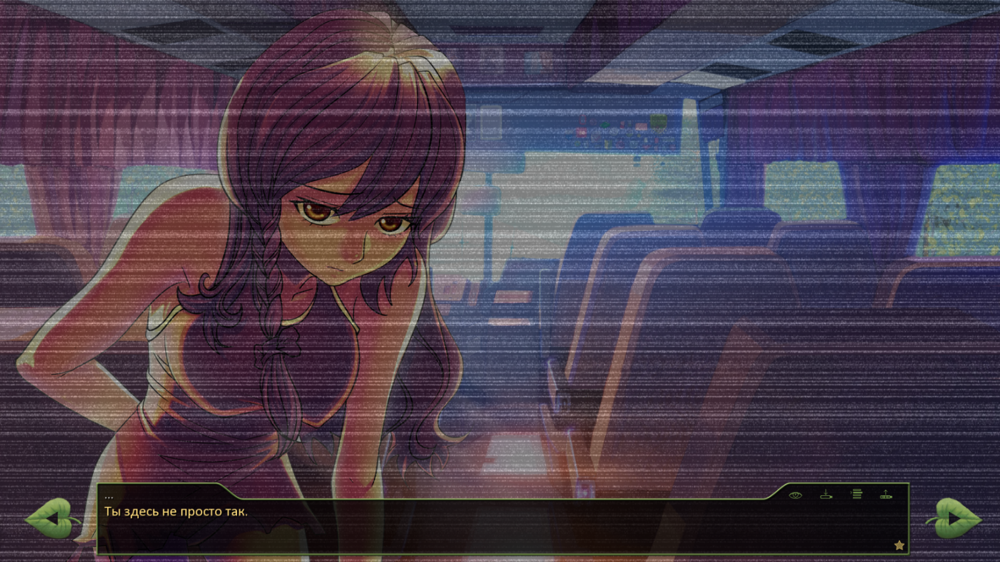

Очередная трактовка происхождения Юли и "Совенка"
7 дней лета :: Руты :: Юленька ака ЮВАО
Страница 14 из 14 • Поделиться •
Страница 14 из 14 •  1 ... 8 ... 12, 13, 14
1 ... 8 ... 12, 13, 14
Самый логичный вариант с вашей точки зрения
Re: Очередная трактовка происхождения Юли и "Совенка"
автор peregarrett в Пт 21 Ноя 2014 - 2:09
Ох блин, еще и ЭТО развивать?!

peregarrett- Находка для шпиона

- Сообщения : 3264
Дата регистрации : 2014-09-07
Возраст : 36
Re: Очередная трактовка происхождения Юли и "Совенка"
автор Гость в Пт 21 Ноя 2014 - 2:17
- Наркомания крепчает:
- Не - тут можно другую фишку придумать! Меня на это "хитрый план" Слави натолкнул: Очухивается Сема в автобусе, а тут хопа! И он своим телом не управляет! А управляет им та самая белокурая бестия (вырвалась!
 )
)
Гость- Гость
Re: Очередная трактовка происхождения Юли и "Совенка"
автор peregarrett в Пт 21 Ноя 2014 - 2:27
Бгы!
- Наркомания прогрессирует:
- "Не дергайся, Семен, ТЫ здесь уже ничего не решаешь, у тебя остался только совещательный голос. Не бойся, жизнь у тебя теперь круто поменяется к лучшему. Будешь вставать рано, делать зарядку - да-да, в здоровом теле - здоровый дух! - будешь приносить пользу обществу. А я уж постараюсь, чтоб ты стал очень полезным членом коллектива!
И кстати... где тут у вас обитают красивые сильные мальчики?"
peregarrett- Находка для шпиона
- Сообщения : 3264
Дата регистрации : 2014-09-07
Возраст : 36
Re: Очередная трактовка происхождения Юли и "Совенка"
автор Гость в Пт 21 Ноя 2014 - 2:30
 бл..................................................................................................................!!!!!!!!!!!!!
бл..................................................................................................................!!!!!!!!!!!!!Предупреждать надо! Я же кофе пил!
- ГНК не дремлет!:
Да ну, нафиг, лучше уж Сема в теле Лены...
Гость- Гость
Re: Очередная трактовка происхождения Юли и "Совенка"
автор BlackDoomer в Сб 1 Авг 2015 - 22:44
Добавлю схематично шизы по вопросу.
- В порядке не совсем бреда:
- С учётом варианта: Семён - и.о. бога (если верить автору), опираясь на ЮВАО-рут оригинального БЛ (сомневаюсь, что там автор сам понял, что написал) и некоторых собственных познаний в эзотерике и т.п. Мог бы предположить, что "Совёнок" - искусственно созданный самим Семёном-богом пакет субреальностей. Это не другие реальности, куда чел обыкновенный может спонтанно "прыгнуть". Такие реальности отличаются от "исходной" "мелочами" и дальнейшей ситуационной цепочкой, а так же ситуационными "мелочами" в прошлом (ты помнишь одни события или их нюансы, а другие в голос утверждают, что было не так). Вся эта байда необходима, чтобы собрать всех нужных ему для решения некоего вопроса "высшего" порядка вместе и установления с ними необходимых для дальнейшего действа отношений. Антураж в данном случае неважен. Более важен возраст (они уже достаточно взрослые, чтобы действовать осмысленно) и то, что ни одна из необходимых ему личностей не имеет своего постоянного партнёра, что в более зрелом возрасте будет служить помехой из-за личных зацепок этих девочек за чисто человеческие отношения. Отсюда и вариант пионерлагеря. А чья там статуя - пофиг. Фактически он привязывает их к себе через личные отношения (не будем вдаваться в эзотерическую "энергетику"), которые в эпилоге они также воспринимают, как некий вариант "сна". Для каждой из них своя субреальность (бог он или погулять вышел), в которой основная задействована для положительной концовки, и свои "аватары", поставляющие суммарный информационный пакет о других вариантах. Поэтому они и могут вспомнить все варианты, но основным считают свой положительный. По "закону" этого Мира должны быть реализованы все варианты ситуаций. А любая ситуация разворачивается по трём линиям: тебе "во вред", тебе "на пользу", без тебя. Последнее отбрасывается, как несущественное, отсюда и 2 варианта концовок по каждому персонажу. В каждой действует один из его "аватаров" (тот самый автобус с "пионерами" из ЮВАО-рута в БЛ). У каждого из них есть возможность "вернуться" к своему состоянию "бога", если задача собрать всех в кучку при установленной привязанности к ГГ будет решена (расписывать внутреннюю иерархию сущности не буду, ибо долго, много и для многих обидно).
Ну, коротко - как-то так.

BlackDoomer- Хикка

- Сообщения : 165
Дата регистрации : 2015-07-31
Откуда : СПб
Re: Очередная трактовка происхождения Юли и "Совенка"
автор Chess в Сб 1 Авг 2015 - 23:29
О, некропостинг начался. 
Интересная точка зрения, непонятно только, причем здесь оригинал БЛ. В 7ДЛсвоя атмосфера свой концепт, никак не связанный с Риточкиным.
Интересная точка зрения, непонятно только, причем здесь оригинал БЛ. В 7ДЛ

Chess- Находка для шпиона
- Сообщения : 3798
Дата регистрации : 2014-10-05
Откуда : Город на краю света
Re: Очередная трактовка происхождения Юли и "Совенка"
автор Chess в Вс 2 Авг 2015 - 0:39
- Вообще, немного приподниму завесу:
- При разработке концепта мода активно использовалась книжка Масодова «Сладость твоих губ нежных».
Chess- Находка для шпиона
- Сообщения : 3798
Дата регистрации : 2014-10-05
Откуда : Город на краю света
Re: Очередная трактовка происхождения Юли и "Совенка"
автор BlackDoomer в Вс 2 Авг 2015 - 12:29
- Раскрывать непонятки - наша работа :
- Причём здесь оригинал БЛ? Исключительно потому, что обе игры используют один и тот же механизм реализации ситуационного пакета. А следовательно её можно разбирать, как пример для пояснений. И ещё потому, что там игруха закончена, а вот как будет реализована концовка этой - в файле только общая схема. Всё остальное - антураж, который, как я уже сказал, не важен. Если бы авторы 7ДЛ не влезли в "божественную" тему, то до определённого предела можно было бы строить любые предположения о возникновении субреальности "Совёнок". Но после этого других вариантов не остаётся. По сравнению с этим или с "голосом" из БЛ - все спецслужбы слишком мелко плавают. По структуре и законам развития, определяемым "правилами и движком игры", 7ДЛ и БЛ - параллельные ситуационные пакеты. Когда произошло ветвление на эти пакеты - да фиг его знает, когда-то давно, история об этом пока умалчивает, если не появиться в 7ДЛ.

И да, если бы Риточка понимал механизм того, что описывает, а не только концепт и антураж, в ЮВАО-рут был бы только один конец, совмещающий оба варианта.
Кстати, этот вариант снимает любые вопросы, связанные с окружением: отопление в лагере, современный диджейский пульт и т.д. Ибо фактически полной памятью и свободой выбора в субреальности обладает только ГГ. Остальные действующие лица в субреальности имеют необходимую для действий там память и навыки, как это происходит в реальном сне, хотя и имеют возможность вспоминать, как вспоминают сны, развитие событий в реале и других субреальностях. Это обусловлено иерархией структуры сущность-автар (скажем так для упрощения).
BlackDoomer- Хикка
- Сообщения : 165
Дата регистрации : 2015-07-31
Откуда : СПб
Re: Очередная трактовка происхождения Юли и "Совенка"
автор 7dl-kun в Чт 6 Авг 2015 - 10:52
- Спойлер:


7dl-kun- Находка для шпиона
- Сообщения : 3026
Дата регистрации : 2014-09-07
Откуда : здесь столько наркоманов?
Re: Очередная трактовка происхождения Юли и "Совенка"
автор Chess в Вс 16 Авг 2015 - 2:33
Тащ автор, ну то, что Семён там не просто так, органически подразумевается. Тут даже никакой интриги нету, всё на поверхности.
Chess- Находка для шпиона
- Сообщения : 3798
Дата регистрации : 2014-10-05
Откуда : Город на краю света
Страница 14 из 14 • 1 ... 8 ... 12, 13, 14
7 дней лета :: Руты :: Юленька ака ЮВАО
Страница 14 из 14